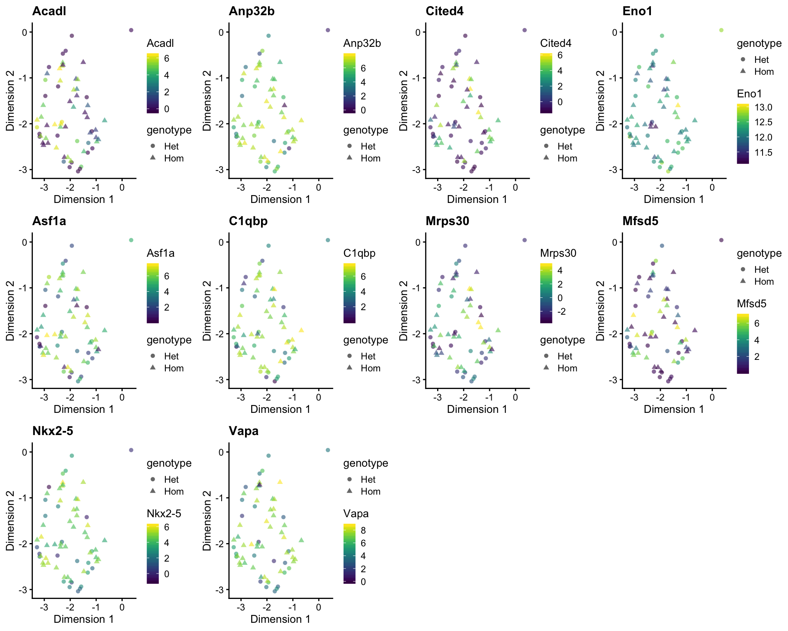

Sample comparison
James Ashmore
2019-10-07
Last updated: 2019-10-08
Checks: 6 1
Knit directory: Heart/
This reproducible R Markdown analysis was created with workflowr (version 1.4.0). The Checks tab describes the reproducibility checks that were applied when the results were created. The Past versions tab lists the development history.
The R Markdown is untracked by Git. To know which version of the R Markdown file created these results, you’ll want to first commit it to the Git repo. If you’re still working on the analysis, you can ignore this warning. When you’re finished, you can run wflow_publish to commit the R Markdown file and build the HTML.
Great job! The global environment was empty. Objects defined in the global environment can affect the analysis in your R Markdown file in unknown ways. For reproduciblity it’s best to always run the code in an empty environment.
The command set.seed(1701) was run prior to running the code in the R Markdown file. Setting a seed ensures that any results that rely on randomness, e.g. subsampling or permutations, are reproducible.
Great job! Recording the operating system, R version, and package versions is critical for reproducibility.
Nice! There were no cached chunks for this analysis, so you can be confident that you successfully produced the results during this run.
Great job! Using relative paths to the files within your workflowr project makes it easier to run your code on other machines.
Great! You are using Git for version control. Tracking code development and connecting the code version to the results is critical for reproducibility. The version displayed above was the version of the Git repository at the time these results were generated.
Note that you need to be careful to ensure that all relevant files for the analysis have been committed to Git prior to generating the results (you can use wflow_publish or wflow_git_commit). workflowr only checks the R Markdown file, but you know if there are other scripts or data files that it depends on. Below is the status of the Git repository when the results were generated:
Ignored files:
Ignored: .DS_Store
Ignored: .Rhistory
Ignored: .Rproj.user/
Ignored: analysis/.DS_Store
Ignored: analysis/cache/
Ignored: code/.DS_Store
Ignored: data/
Ignored: docs/.DS_Store
Ignored: shiny/
Untracked files:
Untracked: analysis/comparison.Rmd
Untracked: docs/figure/doublet.Rmd/
Untracked: palette.csv
Unstaged changes:
Modified: analysis/_site.yml
Modified: analysis/annotation.Rmd
Deleted: analysis/atlas.Rmd
Modified: analysis/clustering.Rmd
Modified: analysis/dimension.Rmd
Modified: analysis/doublet.Rmd
Modified: analysis/feature.Rmd
Deleted: analysis/import.Rmd
Modified: analysis/integration.Rmd
Modified: analysis/markers.Rmd
Modified: analysis/quality.Rmd
Modified: analysis/trajectory.Rmd
Note that any generated files, e.g. HTML, png, CSS, etc., are not included in this status report because it is ok for generated content to have uncommitted changes.
There are no past versions. Publish this analysis with wflow_publish() to start tracking its development.
Introduction
Setup
knitr::opts_chunk$set(
autodep = TRUE,
cache = TRUE,
cache.path = "cache/comparison",
dev = "png",
error = FALSE,
message = FALSE,
warning = FALSE
)pacman::p_load(broom, edgeR, scater, scran)sce <- readr::read_rds(here::here("data/annotation.Rds"))Differential expression
In this section we are going to test for differential genotype expression within each cluster and celltype annotation. This experiment does not contain replicates so we cannot use something like edgeR to perform the differential testing. Instead, we will perform pairwise Welch t-tests between genotypes within each cluster or celltype annotation.
By cluster
Perform pairwise Welch t-tests between cells with different genotypes within each cluster:
fct <- levels(sce$cluster)
res <- lapply(fct, function(x) {
sel <- which(sce$cluster == x)
mat <- logcounts(sce)
fit <- pairwiseTTests(mat[, sel], sce$genotype[sel], block = sce$phase[sel])
out <- fit$statistics[[1]]
})
sig <- lapply(res, subset, FDR < 0.1)
sig <- Filter(nrow, sig)
sig <- lapply(sig, function(x) data.frame(Top = order(x$FDR), x))
names(sig) <- fctTable
Cluster 1
Cluster 2
Cluster 3
Cluster 4
Heatmap
Plot heatmap of gene expression values:
for (n in names(sig)) {
dat <- sig[[n]]
top <- subset(dat, Top <= 10)
ids <- rownames(top)
sel <- which(sce$cluster == n)
cat("##### Cluster", n, "\n")
plotHeatmap(
object = sce[, sel],
features = ids,
exprs_values = "corrected",
center = TRUE,
zlim = c(-5, 5),
colour_columns_by = "genotype",
cluster_rows = ifelse(length(ids) > 1, TRUE, FALSE),
show_colnames = FALSE)
cat("\n\n")
}Cluster 1
Cluster 2
Cluster 3
Cluster 4
Dimension
Plot UMAP reduced dimensions:
for (n in names(sig)) {
dat <- sig[[n]]
top <- subset(dat, Top <= 10)
ids <- rownames(top)
sel <- which(sce$cluster == n)
plt <- lapply(ids, function(x) plotUMAP(sce[, sel], colour_by = x, shape_by = "genotype", by_exprs_values = "corrected") + ggtitle(x))
cat("##### Cluster", n, "\n")
print(patchwork::wrap_plots(plt))
cat("\n\n")
}Cluster 1
Cluster 2
Cluster 3
Cluster 4

Expression
Plot expression values for all cells:
for (n in names(sig)) {
dat <- sig[[n]]
top <- subset(dat, Top <= 10)
ids <- rownames(top)
sel <- which(sce$cluster == n)
plt <- plotExpression(
object = sce[, sel],
features = ids,
x = "genotype",
exprs_values = "corrected",
colour_by = "genotype",
scales = "free")
cat("##### Cluster", n, "\n")
print(plt)
cat("\n\n")
}Cluster 1
Cluster 2
Cluster 3
Cluster 4

By celltype
Perform pairwise Welch t-tests between cells with different genotypes within each celltype:
fct <- levels(sce$cellassign_celltype)
res <- lapply(fct, function(x) {
sel <- which(sce$cellassign_celltype == x)
mat <- logcounts(sce)
fit <- pairwiseTTests(mat[, sel], sce$genotype[sel], block = sce$phase[sel])
out <- fit$statistics[[1]]
})
sig <- lapply(res, subset, FDR < 0.1)
sig <- Filter(nrow, sig)
sig <- lapply(sig, function(x) data.frame(Top = order(x$FDR), x))
names(sig) <- fctTable
Heatmap
Plot heatmap of gene expression values:
for (n in names(sig)) {
dat <- sig[[n]]
top <- subset(dat, Top <= 10)
ids <- rownames(top)
sel <- which(sce$cellassign_celltype == n)
cat("##### cellassign_celltype", n, "\n")
plotHeatmap(
object = sce[, sel],
features = ids,
exprs_values = "corrected",
center = TRUE,
zlim = c(-5, 5),
colour_columns_by = "genotype",
cellassign_celltype_rows = ifelse(length(ids) > 1, TRUE, FALSE),
show_colnames = FALSE)
cat("\n\n")
}Dimension
Plot UMAP reduced dimensions:
for (n in names(sig)) {
dat <- sig[[n]]
top <- subset(dat, Top <= 10)
ids <- rownames(top)
sel <- which(sce$cellassign_celltype == n)
plt <- lapply(ids, function(x) plotUMAP(sce[, sel], colour_by = x, shape_by = "genotype", by_exprs_values = "corrected") + ggtitle(x))
cat("##### cellassign_celltype", n, "\n")
print(patchwork::wrap_plots(plt))
cat("\n\n")
}Expression
Plot expression values for all cells:
for (n in names(sig)) {
dat <- sig[[n]]
top <- subset(dat, Top <= 10)
ids <- rownames(top)
sel <- which(sce$cellassign_celltype == n)
plt <- plotExpression(
object = sce[, sel],
features = ids,
x = "genotype",
exprs_values = "corrected",
colour_by = "genotype",
scales = "free")
cat("##### cellassign_celltype", n, "\n")
print(plt)
cat("\n\n")
}Differential abundance
In this section we are going to test for differential genotype abundance within each cluster and celltype annotation. This experiment does not contain replicates so we cannot use something like edgeR to perform the differential testing. Instead, we will use the binomial test which uses data to test whether a population proportion matches a null expectation for the population. In our case the null expectation is that Het and Hom cells have equal proportion within each cluster or celltype annotation.
By cluster
Perform an exact binomial test across genotypes within each cluster:
tbl <- table(sce$cluster, sce$genotype)
knitr::knit_print(tbl)
Het Hom
1 9 10
2 18 11
3 21 23
4 25 41res <- apply(tbl, 1, binom.test, p = 0.5)
lst <- lapply(res, tidy)
dat <- do.call(rbind, lst)
dat <- cbind(cluster = rownames(tbl), dat)
knitr::knit_print(dat)By celltype
Perform an exact binomial test across genotypes within each celltype:
tbl <- table(sce$cellassign_celltype, sce$genotype)
knitr::knit_print(tbl)
Het Hom
Blood 1 0
Cardiac 65 80
Endothelial 4 0
Gut 3 5res <- apply(tbl, 1, binom.test, p = 0.5)
lst <- lapply(res, tidy)
dat <- do.call(rbind, lst)
dat <- cbind(cluster = rownames(tbl), dat)
knitr::knit_print(dat)Summary
Output
Write experiment data:
readr::write_rds(sce, here::here("data/comparison.Rds"))Session
Print session information:
devtools::session_info()─ Session info ──────────────────────────────────────────────────────────
setting value
version R version 3.6.1 (2019-07-05)
os macOS Mojave 10.14.6
system x86_64, darwin15.6.0
ui X11
language (EN)
collate en_GB.UTF-8
ctype en_GB.UTF-8
tz Europe/London
date 2019-10-08
─ Packages ──────────────────────────────────────────────────────────────
package * version date lib
assertthat 0.2.1 2019-03-21 [1]
backports 1.1.4 2019-04-10 [1]
beeswarm 0.2.3 2016-04-25 [1]
Biobase * 2.45.1 2019-09-04 [1]
BiocGenerics * 0.31.5 2019-07-03 [1]
BiocNeighbors 1.3.5 2019-09-15 [1]
BiocParallel * 1.19.2 2019-08-07 [1]
BiocSingular 1.1.7 2019-09-17 [1]
bitops 1.0-6 2013-08-17 [1]
broom * 0.5.2 2019-04-07 [1]
callr 3.3.1 2019-07-18 [1]
cli 1.1.0 2019-03-19 [1]
codetools 0.2-16 2018-12-24 [1]
colorspace 1.4-1 2019-03-18 [1]
cowplot 1.0.0 2019-07-11 [1]
crayon 1.3.4 2017-09-16 [1]
crosstalk 1.0.0 2016-12-21 [1]
DelayedArray * 0.11.4 2019-07-03 [1]
DelayedMatrixStats 1.7.2 2019-09-08 [1]
desc 1.2.0 2018-05-01 [1]
devtools 2.2.0 2019-09-07 [1]
digest 0.6.20 2019-07-04 [1]
dplyr 0.8.3 2019-07-04 [1]
dqrng 0.2.1 2019-05-17 [1]
DT 0.9 2019-09-17 [1]
edgeR * 3.27.13 2019-09-01 [1]
ellipsis 0.2.0.1 2019-07-02 [1]
evaluate 0.14 2019-05-28 [1]
fs 1.3.1 2019-05-06 [1]
generics 0.0.2 2018-11-29 [1]
GenomeInfoDb * 1.21.1 2019-05-16 [1]
GenomeInfoDbData 1.2.1 2019-05-24 [1]
GenomicRanges * 1.37.16 2019-09-13 [1]
ggbeeswarm 0.6.0 2017-08-07 [1]
ggplot2 * 3.2.1 2019-08-10 [1]
git2r 0.26.1 2019-06-29 [1]
glue 1.3.1 2019-03-12 [1]
gridExtra 2.3 2017-09-09 [1]
gtable 0.3.0 2019-03-25 [1]
here 0.1 2017-05-28 [1]
hms 0.5.1 2019-08-23 [1]
htmltools 0.3.6 2017-04-28 [1]
htmlwidgets 1.3 2018-09-30 [1]
httpuv 1.5.2 2019-09-11 [1]
igraph 1.2.4.1 2019-04-22 [1]
IRanges * 2.19.16 2019-09-13 [1]
irlba 2.3.3 2019-02-05 [1]
jsonlite 1.6 2018-12-07 [1]
knitr 1.25 2019-09-18 [1]
labeling 0.3 2014-08-23 [1]
later 0.8.0 2019-02-11 [1]
lattice 0.20-38 2018-11-04 [1]
lazyeval 0.2.2 2019-03-15 [1]
lifecycle 0.1.0 2019-08-01 [1]
limma * 3.41.16 2019-09-09 [1]
locfit 1.5-9.1 2013-04-20 [1]
magrittr 1.5 2014-11-22 [1]
Matrix 1.2-17 2019-03-22 [1]
matrixStats * 0.55.0 2019-09-07 [1]
memoise 1.1.0 2017-04-21 [1]
mime 0.7 2019-06-11 [1]
munsell 0.5.0 2018-06-12 [1]
nlme 3.1-141 2019-08-01 [1]
pacman 0.5.1 2019-03-11 [1]
patchwork 0.0.1 2019-06-02 [1]
pheatmap 1.0.12 2019-01-04 [1]
pillar 1.4.2 2019-06-29 [1]
pkgbuild 1.0.5 2019-08-26 [1]
pkgconfig 2.0.2 2018-08-16 [1]
pkgload 1.0.2 2018-10-29 [1]
prettyunits 1.0.2 2015-07-13 [1]
processx 3.4.1 2019-07-18 [1]
promises 1.0.1 2018-04-13 [1]
ps 1.3.0 2018-12-21 [1]
purrr 0.3.2 2019-03-15 [1]
R6 2.4.0 2019-02-14 [1]
RColorBrewer 1.1-2 2014-12-07 [1]
Rcpp 1.0.2 2019-07-25 [1]
RCurl 1.95-4.12 2019-03-04 [1]
readr 1.3.1 2018-12-21 [1]
remotes 2.1.0 2019-06-24 [1]
rlang 0.4.0 2019-06-25 [1]
rmarkdown 1.15 2019-08-21 [1]
rprojroot 1.3-2 2018-01-03 [1]
rsvd 1.0.2 2019-07-29 [1]
S4Vectors * 0.23.23 2019-09-13 [1]
scales 1.0.0 2018-08-09 [1]
scater * 1.13.20 2019-09-17 [1]
scran * 1.13.20 2019-09-17 [1]
sessioninfo 1.1.1 2018-11-05 [1]
shiny 1.3.2 2019-04-22 [1]
SingleCellExperiment * 1.7.9 2019-09-12 [1]
statmod 1.4.32 2019-05-29 [1]
stringi 1.4.3 2019-03-12 [1]
stringr 1.4.0 2019-02-10 [1]
SummarizedExperiment * 1.15.9 2019-09-11 [1]
testthat 2.2.1 2019-07-25 [1]
tibble 2.1.3 2019-06-06 [1]
tidyr 1.0.0 2019-09-11 [1]
tidyselect 0.2.5 2018-10-11 [1]
usethis 1.5.1 2019-07-04 [1]
vctrs 0.2.0 2019-07-05 [1]
vipor 0.4.5 2017-03-22 [1]
viridis 0.5.1 2018-03-29 [1]
viridisLite 0.3.0 2018-02-01 [1]
withr 2.1.2 2018-03-15 [1]
workflowr 1.4.0 2019-06-08 [1]
xfun 0.9 2019-08-21 [1]
xtable 1.8-4 2019-04-21 [1]
XVector 0.25.0 2019-05-02 [1]
yaml 2.2.0 2018-07-25 [1]
zeallot 0.1.0 2018-01-28 [1]
zlibbioc 1.31.0 2019-05-02 [1]
source
CRAN (R 3.6.0)
CRAN (R 3.6.0)
CRAN (R 3.6.0)
Bioconductor
Bioconductor
Bioconductor
Bioconductor
Bioconductor
CRAN (R 3.6.0)
CRAN (R 3.6.0)
CRAN (R 3.6.0)
CRAN (R 3.6.0)
CRAN (R 3.6.1)
CRAN (R 3.6.0)
CRAN (R 3.6.0)
CRAN (R 3.6.0)
CRAN (R 3.6.0)
Bioconductor
Bioconductor
CRAN (R 3.6.0)
CRAN (R 3.6.0)
CRAN (R 3.6.0)
CRAN (R 3.6.0)
CRAN (R 3.6.0)
CRAN (R 3.6.1)
Bioconductor
CRAN (R 3.6.0)
CRAN (R 3.6.0)
CRAN (R 3.6.0)
CRAN (R 3.6.0)
Bioconductor
Bioconductor
Bioconductor
CRAN (R 3.6.0)
CRAN (R 3.6.0)
CRAN (R 3.6.0)
CRAN (R 3.6.0)
CRAN (R 3.6.0)
CRAN (R 3.6.0)
CRAN (R 3.6.0)
CRAN (R 3.6.0)
CRAN (R 3.6.0)
CRAN (R 3.6.0)
CRAN (R 3.6.0)
CRAN (R 3.6.0)
Bioconductor
CRAN (R 3.6.0)
CRAN (R 3.6.0)
CRAN (R 3.6.1)
CRAN (R 3.6.0)
CRAN (R 3.6.0)
CRAN (R 3.6.1)
CRAN (R 3.6.0)
CRAN (R 3.6.0)
Bioconductor
CRAN (R 3.6.0)
CRAN (R 3.6.0)
CRAN (R 3.6.1)
CRAN (R 3.6.0)
CRAN (R 3.6.0)
CRAN (R 3.6.0)
CRAN (R 3.6.0)
CRAN (R 3.6.0)
CRAN (R 3.6.0)
Github (thomasp85/patchwork@fd7958b)
CRAN (R 3.6.0)
CRAN (R 3.6.0)
CRAN (R 3.6.0)
CRAN (R 3.6.0)
CRAN (R 3.6.0)
CRAN (R 3.6.0)
CRAN (R 3.6.0)
CRAN (R 3.6.0)
CRAN (R 3.6.0)
CRAN (R 3.6.0)
CRAN (R 3.6.0)
CRAN (R 3.6.0)
CRAN (R 3.6.0)
CRAN (R 3.6.0)
CRAN (R 3.6.0)
CRAN (R 3.6.0)
CRAN (R 3.6.0)
CRAN (R 3.6.0)
CRAN (R 3.6.0)
CRAN (R 3.6.0)
Bioconductor
CRAN (R 3.6.0)
Bioconductor
Bioconductor
CRAN (R 3.6.0)
CRAN (R 3.6.0)
Bioconductor
CRAN (R 3.6.0)
CRAN (R 3.6.0)
CRAN (R 3.6.0)
Bioconductor
CRAN (R 3.6.0)
CRAN (R 3.6.0)
CRAN (R 3.6.0)
CRAN (R 3.6.0)
CRAN (R 3.6.0)
CRAN (R 3.6.0)
CRAN (R 3.6.0)
CRAN (R 3.6.0)
CRAN (R 3.6.0)
CRAN (R 3.6.0)
CRAN (R 3.6.0)
CRAN (R 3.6.0)
CRAN (R 3.6.0)
Bioconductor
CRAN (R 3.6.0)
CRAN (R 3.6.0)
Bioconductor
[1] /Library/Frameworks/R.framework/Versions/3.6/Resources/library